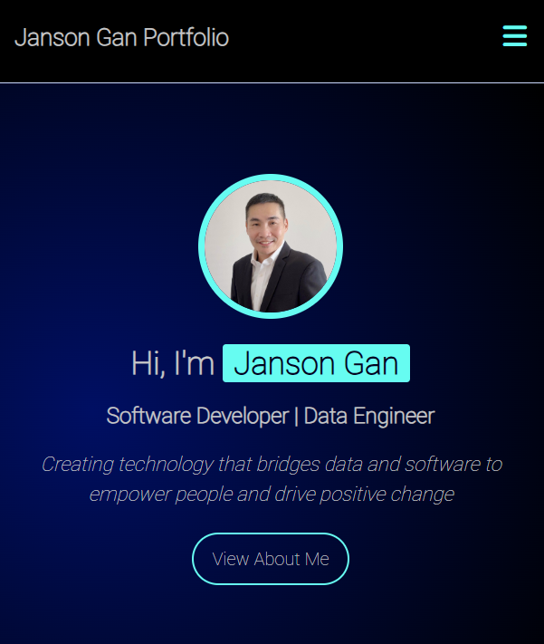
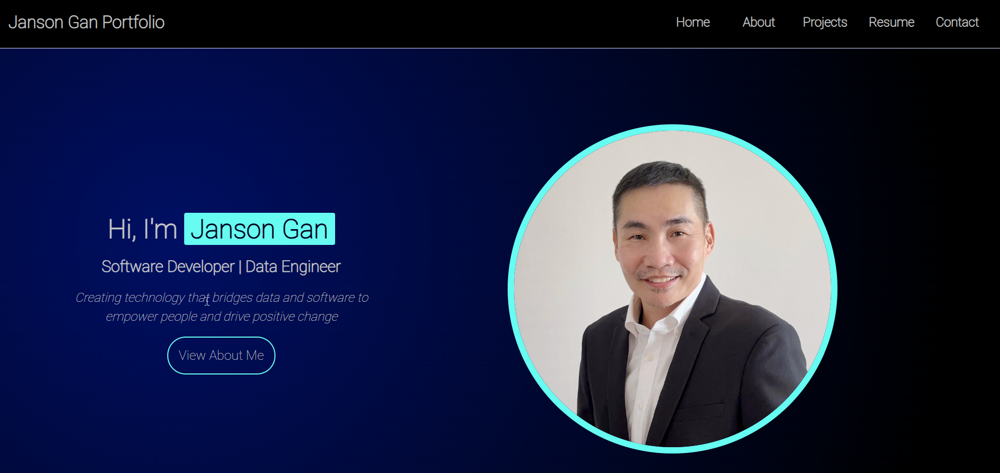

This portfolio was created to showcase my skills and projects as I continue to grow in the tech field. With a background in full stack development, my intent was to design and build a responsive webpage that highlights my abilities in HTML, CSS, JavaScript. The site serves as a practical demonstration of my front-end development knowledge and design sense.
This portfolio was created using Mobile first concept, followed by @media queries to resize the layout for larger screen. Within the Projects section, I showcase responsive layouts, interactive elements, and clean forms that demonstrate practical frontend design skills.
I have built full-stack applications that highlight my ability to deliver end-to-end solutions, from frontend interfaces to backend logic. These projects reflect the experience I gained through intensive bootcamp training as well as my consistent self-learning journey. Together, they demonstrate not only my technical skills but also my commitment to continuous growth in the tech industry.
I developed an end-to-end ETL pipeline process, reflecting my training in data engineering and my ability to design, manage, and optimize data workflows. This project demonstrate my capability to handle complex data pipelines and transformations.
I actively following AI engineering trends to ensure my skills remain current and relevant. My focus is on integrating AI-driven solutions into future projects, keeping pace with evolving technologies and industry demands.